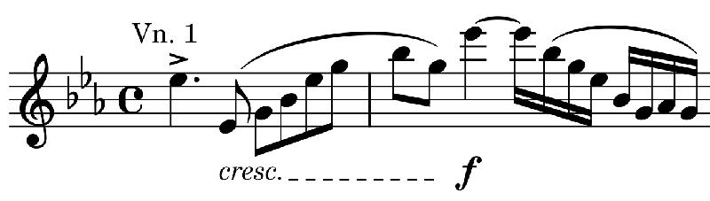

メンデルスゾーン: 弦楽八重奏曲
使い始めたばかりのストリーミングサービスでメンデルスゾーンの八重奏曲の新しい録音を探していてこれを見つけた。聞き始めてすぐ、第1ヴァイオリンが変ホ長調のアルペジオを転回させながら最高音Esに到達するところで、あれ、転んだ? ライブなのかな? 止めておこうかと思ったが、何となく気になるところがあったのでそのまま聞き通した。いや、これはわざとやっているとすぐにわかる。
Felix Mendelssohn: Octet in E flat major, Op.20
Gringolts Quartet and Meta4
(2020)
冒頭3小節目、楽譜はこうなっている。

八分音符フレーズの終わりの B-G の2音、昔からよく馴染んでいたスメタナQ＋ヤナーチェクQによる録音ではスタッカートにしている。次の高いEsを強調するためにはこのやり方は有効で、B-Gと降りていったん態勢を整えてEsに向かう感じがよく出る。楽譜に忠実にレガートで弾くと何か坐りが悪くなってしまうように思う。
この録音、第1ヴァイオリンはMeta4のMinna Pensolaらしいが、B-Gの部分を極端に速く短く弾いている。繰り返される中ではBが小節線を無視して前にめり込んでいたりもする。装飾的なパッセージにアッチェレランド&ルバートをかけるフランス風イディオムを思わせる。独特で面白い。
聴き進めていくと独特なのはこれだけではない。テンポの揺らし方、ダイナミクスの幅が共にとても激しいし、ヴイブラートは非常にデリケートに制御・抑制されている。中膨らみの音（Messa di voce）も多用される。それに楽譜にない装飾音や過渡音も追加されている。似た傾向の演奏としては、ラルキブデッリ他の録音(1992)が思い出される。響きの柔らかさ（特に第3楽章）と整った中にも立体的なバランスがラルキブデッリの特徴であるのに対して、こちらはさらに自由で尖った感じである。
あまたの工夫がこれでもかと組み込まれていて勢いもコントラストもすごいのに、荒っぽさや押しつけがましさはほとんど感じられない。若書きの曲だから冗長なところや未熟なところもあるけど若さに任せて熱量を込めればそれっぽくなるさ、といった浅はかな考えとは無縁である。
たっぷりと新鮮な響きを楽しみつつ、1楽章のコーダ、1stと2ndヴァイオリンがオクターブユニゾンで歌う所に到る頃には、鳥肌が立つほどの高揚感を得ることができる。
しかし様々な揺らぎをこの精度で8人に徹底させるのは大変だったのではないだろうか。それとも少しの打合せだけで感覚的にできてしまうのだろうか。頑張って合わせました！などという跡は微塵もなく、即興でやってます、楽しいでしょう？という余裕が終始感じられる。素晴らしい。

(Oct. 12, 2022; Rev. Aug. 17, 2024)